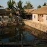

SOLITARY NOOK

Nestled in the lush green forest of Sundarban, Solitary Nook is located at a distance of 102 km from the Netaji Subhash Chandra Bose International Airport and 98.9 km from the Sealdah Railway Station.
The famous tourist excursions like Sudhanyakhali Watch Tower, Sudhanyakhali Tiger Reserve,Sajnekhali Bird Sanctuary and many others are situated at an accessible distance from the hotel.
The resort offers ample of facilities to meet the expectations of the guests. The property also includes services like room service, doctor on call, laundry,guide service, sightseeing and bonfire.
Solitary Nook features spacious rooms, which are beautifully decorated and come with amenities like air-conditioner, mineral water, balcony/sit out, sofa unit and attached bathrooms with shower area and essential toiletries.
The in-house dining option serves delicious and homemade meals.
Cool off and wind down amidst nature at Solitary Nook Resort.
| RATINGS |
| HOTEL 3 STAR |
| LOCATION-3.5 |
| FACILITIES-3.5 |
| FOOD-3.7 |
| CLEANLINESS-4.1 |
| ROOMS-4.1 |
| HOSPITALITY-4.3 |
| LOCATION |
| nested in lush green forests |
| 102 KM FROM NETAJI SUBHASH CHANDRA BOSE INTERNATIONAL AIRPORT |
| 98.9 KM FROM SEALDAH RAILWAY STATION |
| NEAR TO BIRD SANCTUARY |
| NEAR TO TIGER RESERVE |
HOTEL AMINITIES
| ROOM SERVICE |
| DOCTOR IN CALL |
| LAUNDRY |
| GUIDE SERVICE |
| SIGHTSEEING |
| BONFIRE |
| AIR CONDITIONER |
| MINERAL WATER |
| BALCONY/SIT OUT |
|
ROOMS
| FAMILY ROOMS |
| CLASSIC ROOMS |
| PREMIUM ROOMS |
| SUPERIOR ROOMS |